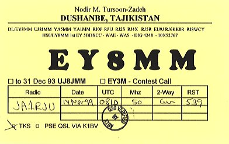
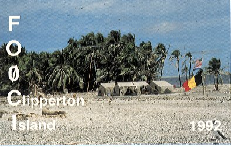

8Q7QQで運用しているPierre
RIGはIC-706MK2に4ele
このリポートは 1エリアの入感状況です
全国版50MHz DX Clusterも参考にして下さい
TIME:UTC(JST-09:00)
Flash ! DX の読み方
【Back Issues Feb.2000】
29.Feb.2000(13:00k) *VK-TV 22:50- 46.172 -- *CE-FM 22:50- 47.9/48.3 FM CE Music CX8BE 22:55 50.106 SSB CX9DK 22:56 50.130 SSB LW3EBJ 23:01 50.100 CW LU3EMK 23:02 50.122 SSB CX3AN 23:04 50.120 SSB LW5DX 23:05 50.152 SSB -00:20z F.OUT *VK-TV 00:00 46.172/240 -- *ZL-TV 00:00 45.24/25/26-- *DU-TV 00:20- 48.250 -- V73SIX 00:20- 50.014 CW Beacon *ZL-Audio 01:20- 50.760 FM ZL-TV Audio *CE-FM 01:25- 49.7/48.3 FM CE Music Strong! VK4KK 02:06 50.110 SSB VK4KR 02:14 50.130 SSB VK4CP 02:45 50.150 SSB VK8RAS 04:45- 50.047 CW Beacon VK4BRG 04:45- 50.077 CW Beacon VK4ABP 04:45- 52.346 CW Beacon VK4KJL 05:07 50.110 SSB VK4ABW 05:18 50.110 SSB *9M-TV 06:00- 48.240/260 -- VK4BLK 06:36 50.110 SSB 9M2TO/B 06:50- 50.005 CW Beacon V73SIX 07:07- 50.014 CW Beacon V73AT 07:26 50.110 CW FR1AN 08:50 50.110 SSB weak 9V1UV 08:52 50.110/135 SSB *BY-TV 10:00- 49.750 -- VK4FNQ 11:12 50.110/130 SSB YB5QZ 11:21 50.110 CW VK8RAS 11:45- 50.047 CW Beacon VK4ABP 11:45- 52.346 CW Beacon VK4RIK 11:45- 52.445 CW Beacon DU1EV 12:22 50.115 SSB/AM VK6JQ 12:29 50.110 CW DU1EV 13:00 51.022 FM ◎ 早朝からCX、LUなど南米がオープン。JA側ではJA7など北寄りに良く開いていた模様。 今日は48.250MHzのEU(CT)のTVも入感なく、ロングパスがオープンした昨日のコンデションとは 明らかに違っていた。6mにはやはり"2匹目のドジョウ"は居なかった。 シンガポールの9V1UV・Selvaは、06:00z-08:00zにJAとのQSOにトライしてくれた。 9M2TOのビーコンが入感していたこの時間帯にはオープンしなかったが、約1時間後の08:50z頃 から強力に入感してきた。 Selvaは現在50Wに4eleでQRVしている。 9V1UVが入感する少し前から50.110MHzでレユニオンのFR1ANも入感していたが、QSOの出来るレ ベルで聞こえていたのはJA2までで、1エリアでは"出ている"のが確認出来る程度。 28.Feb.2000(14:00j) *VK-TV 00:20- 46.172/240 -- (PY's 00:20 50.110- SSB/CW JA6.JR6) (EA8SIX 00:22- 50.073 CW Beacon JA3-) (CT3HF 00:25- 50.110/155 SSB LP JA6.JR6) *EU-TV 00:30- 48.250.1 -- LP 150deg *ZL-TV 00:30- 45.24/25/26-- EH8BYR 00:41 50.176 SSB LP 150deg strong ! (CT3HF 00:43 50.110/151 SSB LP JA3-5-) (CX2LI 01:20 50.110 SSB JA0-) VK4PU 01:21 50.110 CW VK4CP 02:04 50.110 SSB VK4BLK 04:00 50.110/140 SSB VK4LR 04:28 50.110 SSB VK4KJL 04:29 50.110 SSB VK8RAS 05:15 50.047 CW Beacon *9M-TV 07:00- 48.240/260 -- *DU-TV 07:00- 48.250 -- VK4KK 08:58 50.110 CW VK4BKL 08:58 50.110 CW VK4APG 09:12 50.110 CW VK6RSX 09:15- 50.304 CW Beacon V73AT 10:07 50.110 CW VK6JQ 10:11 50.110 CW VK4APE 12:59 50.110/120 SSB VK4FNQ 13:05 50.110 SSB (FR5SIX 13:22- 50.022 CW Beacon JA2-) YC1MH 13:40 50.150 SSB ◎ 待望の朝のロングパスがオープンした。今サイクル初の入感となったのはCT3HF(Madeira Is) とEH8BYR(Canary Is)。 00:00z過ぎから沖縄、南九州に入感してきたCT3HFに続いてEH8BYRが入感、EH8BYRは沖縄のオー プンとほとんど同時に00:40z頃から1エリア以西の本土でも入感、多くの局がQSOに成功した。 EH8BYRは1エリアでは01:00z頃に聞こえなくなったが、西日本ではさらに20分ほど入感が続いた。 この間、ロングパスのオープンの目安になる48.250付近のヨーロッパのTVは弱く聞こえていた。 CT3は前サイクルでJAからQSOが出来ているが、EH8(EA8)は前サイクル(1990年)で"受信"の記 録があるだけなので、今回のQSOがJAからの"初QSO"となる。 今日のEH8BYRの信号はピークでRS59まで上昇したが、最初から50.176MHzと高い周波数に出てき たために入感に気づいた局は少なく、最初の頃は"CQ"の連発だった。 "高い周波数"に出てきたのは、この時間にヨーロッパから南米もオープンしており、低い周波数 帯にPYなど南米の局がたくさんQRVしていたため混信を避けて出てきたものらしい。 この時間帯に沖縄、南九州ではPY'sが良く聞こえていたと。 27.Feb.2000(14:00g) (LU's 00:57- 50.110- SSB/CW JA8-) *VK-TV 02:30- 46.172/240 -- *9M-TV 02:30- 48.240/260 -- *DU-TV 02:30- 48.250 -- (PY5CC 02:45- 50.110- SSB JA5.6-) VK4KK 03:20 50.110 SSB VK4KJL 03:33 50.110 SSB VK4RGG 03:34- 50.058 CW Beacon YJ8UU 03:35 50.120 SSB VK4BKM 03:38 50.110 CW VK4LR 03:43 50.110 SSB VK4KK 04:41 50.110 SSB VK4CXQ 04:55 50.115 SSB VK4ABW 04:56 50.140 SSB VK4DV 05:00 50.110 SSB VK4JH 05:03 50.110/130 SSB VK4FNQ 05:06 50.110/150 SSB VK8RAS 05:17- 50.047 CW Beacon VK4BRG 05:18- 50.077 CW Beacon *9M-TV 06:00- 48.240/260 -- *DU-TV 06:00- 48.250 -- VK4APE 06:10 50.110 SSB (4S7YSG 06:30- 50.110/120 CW JA3.4.5.6.JR6) YB5QZ 07:30 50.110 CW 9M6SMC 08:00- 50.015 CW Beacon Strong 9V1JA 08:02 50.085 CW EY8MM 09:30 50.110 CW weak VK4APE 12:38 50.110 SSB VK8MS 12:39 50.110 SSB VK6RSX 12:39- 50.304 CW Beacon YC1MH 13:00 50.110 CW DU1EV 13:01 50.110 SSB/CW VK4JH 13:03 50.110 CW 9M6SMC 13:10- 50.015 CW Beacon VK6JQ 13:31 50.110 SSB ◎ 午前中にJA8にLU's、西日本から沖縄ではPY'sが入感した。1エリアでは昼頃から聞こえだし たVK'sと南太平洋だけ?。夕方から沖縄、西日本でスリランカの4S7YSGがFBにオープンしている。 4S7YSG・佐竹さんからのリポートによると、今日は06:30z-09:30zにかけてJA3、4、5、6、JR6 エリアの約40局とQSO出来たと。 09:30z頃から入感したタジキスタンのEY8MMは、1エリアでは信号も弱く5KHz UPのスプリット になった09:50z頃に聞こえなくなった。1エリアからのEY8MMとのQSOは昨年11月14日以来。

26.Feb.2000(13:00j)
*VK-TV 23:40- 46.172/240 --
V73SIX 23:40- 50.014 CW Beacon
P29BPL 23:50- 50.029 CW Beacon
*VK-TV 00:00- 46.172/240 --
*ZL-TV 00:30- 45.24/25/26--
VK4KK 00:43 50.110 CW
VK4RGG 00:44- 50.058 CW Beacon
VK4BRG 00:45- 50.077 CW Beacon
VK4JSR 00:55 50.110/140 SSB
VK4LR 01:45 50.110/120 SSB
VK4APG 03:46 50.110 SSB
VK2QF 03:59 50.110/135 SSB
VK8RAS 04:00- 50.047 CW Beacon
VK2YHN 04:30 50.135 SSB
VK4CXQ 04:36 50.110/115 CW
VK4JH 04:38 50.130 SSB
VK4FNQ 04:39 50.130 SSB
HL5XF 04:45 50.110 CW
VK4KR 04:45 50.110 SSB
VK4WDM 04:49 50.110 SSB
VK4ABP 05:29- 52.346 CW Beacon
VK4CP 05:30 50.110/150 SSB
ZL2TPY 05:31 50.110/147 SSB
VK4DUG 05:34 50.110 SSB
FK8CA 05:52 50.086 RTTY
9M2NK 06:03 50.107 CW
VK5AYD 06:06 50.110/135 SSB/CW
V73SIX 06:11 50.014 CW Beacon
V73JK 06:11 50.200 SSB
9M2TO/B 06:20 50.005 CW Beacon
VK4XA 06:33 50.100 CW
VK8MS 06:44 50.110 SSB
*9M-TV 06:45- 48.240/260 --
*DU-TV 06:45- 48.250 --
DU1EV 06:48 50.107 CW
9M6SMC 06:50- 50.015 CW Beacon
9M2NK 08:50 50.107 CW
V73SIX 09:27 50.014 CW Beacon
V73JK 09:27 50.130 SSB
BY-TV 10:00- 49.750 --
VK6JQ 10:13 50.111 CW
VK6RSX 10:45 50.304 CW Beacon
VK5AYD 10:53 50.110 CW
DU1EV 12:00 50.120 SSB
◎ 今日は早い時間帯から南太平洋方面が開き、期待された朝の東方向のコンデションは"不発"。
南九州、沖縄では弱いPYが入感している。午後から"遠・近"とり混ぜて東から西まで"常連"がい
ろいろ聞こえていた。
25.Feb.2000(15:00g)
*9M-TV 00:00- 48.240/260 --
*CE-FM 00:00- 47.9/48.3 FM CE Music Strong!
CE3SAD 00:09 50.110 SSB
LU8MB 00:20 50.110/116 SSB
PY5CC 00:29 50.120 SSB
V73SIX 00:30- 50.014 CW Beacon
*VK-TV 00:40- 46.172/240 --
LU8MB 00:49 50.110 SSB
(PY2XB 00:57 50.110 SSB JA3-)
KH6SX 00:59 50.105 CW
KH6HME/B 01:00- 50.061 CW Beacon
LU2DEK 01:14 50.120 SSB
LU3EMK 01:20 50.110 SSB
(PY5NN 01:20 50.110 CW JA6-)
VK4JSR 01:23 50.125 SSB
(ZP5AA 01:23- 50.024 CW Beacon JA6-)
VK4BKM 01:24 50.125/100 SSB/CW
VK4KK 01:34 50.110 CW/SSB
VK2YO 01:38 50.110 SSB
VK4BG 01:41 50.110 SSB
LU3EMK 01:42 50.110 SSB
LU2NI 02:09 50.120 SSB
LU6DRV 02:23 50.130 SSB
VK4RGG 04:00- 50.058 CW Beacon
VK4BRG 04:00- 50.077 CW Beacon
VK4LR 04:02 50.110 SSB
VK4DV 04:14 50.125 SSB
VK2FLI 04:19 50.120 SSB
VK4AXM 05:26 50.110/115 CW/SSB
VK4ABP 05:30 52.346 CW Beacon
VK4AJS 05:38 50.110/160 SSB
VK4WDM 05:39 50.110 SSB
VK4AFL 05:39 50.110 SSB
VK4NW 05:46 50.110 SSB
VK4DUG 06:30 50.110 SSB
VK8RAS 06:45- 50.047 CW Beacon
V73JK 07:00 50.136 SSB
V73SIX 07:10 50.014 CW Beacon
VK4BKM 07:19 50.110 SSB
VK8ZAA 07:28 50.110 SSB
VK4JSR 08:07 50.110 SSB
VK4APG 08:14 50.110 SSB
(4S7EA 07:24 50.110 SSB JA6.JR6-)
(VQ9QL 15:30 50.110 CW JA6.JR6-)
◎ 午前中は久しぶりに南米の入感で賑わった。西日本に比べ1エリアでの入感は強力なものでは無
かったが、LU'sは02:30z頃まで聞こえていた。
九州南部や沖縄ではこの時間にPY'sと共にZP5AAのビーコンも強力だったと。01:20z頃からPY'sが
VP6BRとQSOしているのが入感していたとの事だが、VP6BRがJAにアンテナを向けても残念ながらこ
の時間帯のパスは無かった。午後は今日もVK4'sが強力。
24.Feb.2000(12:00h)
*ZL-TV 00:30- 45.24/25/26--
*VK-TV 01:30- 46.172/240 --
VK4RGG 03:10- 50.058 CW Beacon
VK4LR 03:13 50.110 SSB
VK4PU 04:06 50.110 CW
VK4BLK 04:27 50.110/130 SSB
VK4BRG 04:30- 50.077 CW Beacon
VK4ABW 04:36 50.110/130 SSB
VK4NW 04:39 50.110 SSB
VK2FSI 04:42 50.110/160 SSB
VK4DV 04:50 50.140 SSB
*BY-TV 04:50- 49.750 --
VK4KR 04:53 50.155 SSB
VK4KK 05:02 50.110 CW
VK4AJS 05:04 50.160 SSB
VK4DUG 05:32 50.110 SSB
VK4AFL 05:38 50.110/177 SSB
*9M-TV 06:00- 48.240/260 --
*DU-TV 06:00- 48.250 --
VK8MS 08:28 50.110 SSB
VK8RAS 08:30- 50.047 CW Beacon
VK4JSR 09:00 50.110 SSB
(FR1AN 10:45- 50.110 SSB JA4.5.6)
VK4ABW 11:10 50.110 SSB
VK6JQ 11:12 50.110 CW
VK4FNQ 11:17 50.110/130 SSB
VK4JH 11:23 50.110 SSB
VK4CXQ 11:54 50.110 CW
P29BPL 12:00- 50.029 CW Beacon
◎ 日中のVK4'sは相変わらず良くオープンしている。夜間のEvening TypeのTEPも"復活"してきた。
Cocos島のVK9COは1エリアではほとんど聞こえなかったが、Christmas島のVK9XTはTEPの"南北の
領域"に近くなった分だけ、1エリアでも良く聞こえる様になった。
◎ 昨日、米カリフォルニア州サンジエゴを出港、Clippertonに向かっているPediの一行はN9NS/MM
のコールサインを使い"MM"でQRVしている。
23.Feb.2000(13:00h)
*ZL-TV 01:30- 45.24/25/26--
*VK-TV 02:30- 46.172/240 --
*9M-TV 02:30- 48.240/260 --
*DU-TV 02:30- 48.250 --
VK4KR 04:10 50.130 SSB
VK4LR 04:12 50.140 SSB
VK4CV 04:16 50.110/150 SSB
VK4RGG 04:17- 50.058 CW Beacon
VK4KK 04:24 50.120/125 SSB
VK4GWC 04:30 50.110/170 SSB
HL5XF 04:32 50.105/160 CW/SSB
VK4ZIM 04:35 50.160 SSB
VK4BRG 04:37- 50.077 CW Beacon
VK4GPP/M 04:38 50.110/170 SSB
VK4GPS 04:41 50.102 CW
VK4ZIN 04:42 50.170 SSB
VK4DV 04:46 50.110/150 SSB
VK4DUG 04:51 50.160 SSB
VK4BG 04:56 50.160 SSB
VK4PU 05:22 50.105 CW
VK4BLK 05:37 50.165 SSB
VK6RSX 08:50- 50.304 CW Beacon
(FR1AN 10:05 50.110 SSB -JA6)
(4S7EA 11:08 50.110 CW/SSB -JA6)
VK6JQ 11:13 50.111 CW
VK4JH 11:35 50.110 CW
P29BPL 11:37- 50.029 CW Beacon
VK4APE 11:43 50.110 SSB
*DU-TV 12:00- 48.250 --
(FR1GZ 12:08 50.110 SSB -JA6)
VK8MS 12:09 50.110 SSB
DU1EV 12:11 50.110 SSB
VK9XT 12:20 50.120 SSB QSX 5-10 UP
◎ 日中は強力なVK4'sがオープン。10:00z頃から九州から沖縄方面でFR1AN、FR1GZ、4S7EAなどイ
ンド洋方面がオープンしていた様だが、"もちろん"1エリアでは聞こえない。
Christmas島のVK9XTは今日も12:20z頃からQRVしてきた。最初弱かった信号も徐々に上昇、数分
後には1エリアでもQSO出来る強さまで上り、フェードアウトする13:00z過ぎまで"パイル"が続いた。
◎ [FO0・Clipperton Pedi(2)]
Clipperton DX-Pediのため、米カリフォルニア州サンジエゴ(San Diego)に滞在しているJK7TKE・
福井さんからの連絡によると、メンバーは現地時間の22日夜、Clippertonに向けサンジエゴ港を出
発すると。既に目的地に向け出港していると思われるが、運用開始は予定通り3月1日。
出港に先立ち6m関係のスケジュールが発表されている。それによると運用周波数は、当初の予定通
り50.115MHz、この周波数で"CQ・Beacon"を発射する。オープン後はスプリットによる運用を行う。
使用RIGはIC-756 PROにリニアーアンプ、アンテナはM2社の6M7JKV(7ele)が使われる。
尚、前回(1992年3月)のFO0CIの運用では、全QSO数46,044、6mのQSOは279(SSB=159、CW=120)、JA
からの6mのQSOは僅かに10局(JA2-1、JA4-3、JA5-1、JA6-1、JR6-4)だった。

22.Feb.2000(13:00g)
*ZL-TV 00:30- 45.24/25/26--
(KH6HME 00:45- 50.061 CW Beacon -JA6)
*VK-TV 01:30- 46.172/240 --
*9M-TV 01:30- 48.240/260 --
KH6SX 01:45 50.110 CW
VK4LR 04:52 50.110/130 SSB
VK4BRG 04:54- 50.077 CW Beacon
VK4RGG 04:55- 50.058 CW Beacon
VK4SX 04:57 50.110/120 SSB
ZL4WA 04:59 50.110 CW
VK4CV 05:04 50.110/130 SSB
VK4APG 05:12 50.125 SSB
VK4BLK 05:18 50.110/160 SSB
VK4DUG 06:03 50.110 SSB
VK4FNQ 06:13 50.140 SSB
VK8RAS 06:15- 50.047 CW Beacon
VK6RSX 06:15- 50.304 CW Beacon
VK9XT 12:20 50.110/120 SSB QSX 10KHz UP
9M6GY 12:41 50.110 SSB
VK6JQ 12:43 50.112 CW
9M6SMC 12:46 50.015 CW Beacon
VK6RSX 12:50- 50.304 CW Beacon
(9M6SU 15:05 50.120 SSB JA2-)
◎ 午前中に弱いKH6の入感があった。日中はノイズレベルの高いコンデション。
夕方になって落ち込んでいたコンデションも、夜になって僅かに上昇、12:20z頃からVK9XT(クリ
スマス島)が入感してきた。西日本では強力に入感していたVK9XTも、1エリアでは相変わらず弱
く、一時的に上昇した12:30z頃に数局QSO出来た。12:40z頃にフェードアウト。
21.Feb.2000(12:00f)
*ZL-TV 00:30- 45.24/25/26--
*VK-TV 01:30- 46.172/240 --
(PY5CC 01:40- 50.110 SSB JA6/JR6)
VK4KK 04:36 50.110 SSB
VK4RGG 04:37- 50.058 CW Beacon
VK8RAS 05:00- 50.047 CW Beacon
VK4CV 05:19 50.110 SSB
VK4DUG 05:21 50.110 SSB
VK4PU 05:25 50.110 SSB
VK4BRG 05:29- 50.077 CW Beacon
VK4ABP 05:53- 52.346 CW Beacon
VK4BLK 06:18 50.110 CW/SSB
*9M-TV 07:00- 48.240 --
(FR1AN 11:43 50.110/120 SSB JA6/JR6)
◎ 昨日の大雪予報は"大はずれ"でホッとしたのもつかの間、低気圧の通過の後に吹き込む強風が
吹き荒れた今日の関東地方。午前中の沖縄地方は相変わらずPYの入感で賑わっているが、東日本の
コンデションは"冷え込んだ"まま。一時上昇していた夜間のTEPもここのところ落ちてしまった。
一方、JR6(沖縄)やJA6(与論島)では相変わらず夜間のインド洋方面が良く、今日もFR1AN(レユニ
オン)が入感している。
◎ 期待されたZK2(Niue Is)のDX peditionはJAとのオープンも無いまま昨日で終了した。
◎ [FO0・Clipperton Pedi(1)]
3月1日から運用が予定されているFO0(Clipperton Is)のDX Peditionに、メンバーの一人とし
て参加するJK7TKE・福井さんは、本日午後、船の出発地となる米国・カリフォルニア州サンジエ
ゴに向け成田を出発した。サンジエゴでは出発する23日まで6mでお馴染みのN6XQ宅に滞在すると。
ここから6日間の航海の後に目的地のClipperton島に到着する予定。運用開始は3月1日。
今回のDX Peditionで使用するコールサインはまだ公表されていないが、これは運用前にニセモ
ノ(パイレート)が出るのを防ぐための措置。
20.Feb.2000(13:00g)
*ZL-TV 00:30- 45.24/25/26--
*VK-TV 01:30- 46.172/240 --
VK2QF 02:58 50.110/107 SSB/CW
VK4LR 03:20 50.110 SSB
VK4CP 03:27 50.110/130 SSB
VK4RGG 03:28- 50.058 CW Beacon
VK4CLM 03:31 50.130 SSB
VK2EFT 03:35 50.110 CW
VK4GWC 03:38 50.136 SSB
VK2AMR 03:45 50.145 SSB
VK4BRG 04:00- 50.077 CW Beacon
VK2FHN 04:25 50.120 SSB
*9M-TV 04:30- 48.240/260 --
VK2YO 04:32 50.110/120 SSB
VK2DN 04:40 50.102 CW
VK4BLK 04:52 50.130 SSB
VK2KST 04:56 50.215 SSB
VK4GR 04:58 50.110 SSB
VK4WTN 05:00 50.155 SSB
VK4APG 05:30 50.110 SSB/CW
VK6WU 06:12 50.110 CW
YB5QZ 06:50 50.110 CW
9M2JKL 07:00 50.107 CW
(Z22JE 09:45 50.110 SSB JR6)
VK6RSX 11:45 50.304 CW Beacon
◎ 昨日と同様、午後からVK2/VK4が強力に入感。VKのフェードアウト後に9M2/YBが入感してきた
のも昨日と同じコンデション。今日は近場の49.750MHzのTVのQRMが無い分"弱い"信号でも了解度
は良かった。VKが入感する直前の02:00z頃に東方向のコンデションが上昇していたが、この時間
帯にJR6（沖縄)やJA6(与論島)ではPY'sがオープンした。
昨夜、VR2(ホンコン)から5H3US(タンザニア)とのQSO(16:15z頃)がクラスターにリポートされ
たのに続き、今日は沖縄から09:54zのZ22JE(ジンバブエ)とのQSOもリポートされている。
そろそろ沖縄、西日本で西方向のオープンが期待出来る時期になってきた。
◎ Christmas Isから運用しているVK9XT(OP DJ3OS)からの情報によると、今日現在(午前中)6m
でのQSOは8Q7QQだけとの事。他にもVR2の信号を聞いたが、JA局の入感はないと。
JAから夕方にYB/9M2/VK6方面のパスがあるのでコンデション的にはオープンしても不思議ではな
いのだが、聞いている"タイミング"が悪いのかも？。
19.Feb.2000(13:00j)
*ZL-TV 00:30- 45.24/25/26--
*VK-TV 02:30- 46.172/240 --
*9M-TV 02:30- 48.240/260 --
VK4BLK 03:53 50.110 SSB
VK4LR 04:02 50.110/150 SSB
VK4JSR 04:12 50.110/160 SSB
VK4ZIN 04:15 50.110/120 SSB
VK4TVI 04:15 50.110/140 SSB
VK4ARN 04:18 50.140 SSB
VK4RGG 04:19- 50.058 CW Beacon
*9M-TV 04:30- 48.240/260 --
*DU-TV 04:30- 48.250 --
*BY-TV 04:30- 49.750 --
9M6SMC 04:30- 50.015 CW Beacon
VK4CAW 05:00 50.100 CW
9M6GY 05:05 50.110/120 SSB
VK4KK 05:12 50.120 SSB
9M2JKL 06:20 50.107 CW
BG7OH 06:57 50.110 SSB
YB5QZ 08:02 50.110 CW
9M2JKL 08:12 50.107 CW
VK6IP 08:22 50.110 CW
9M6SMC 08:30- 50.015 CW Beacon strong !
VK8ZAA 09:44 50.110/130 SSB
VK6RSX 09:50- 50.304 CW Beacon
VK8RAS 10:10- 50.047 CW Beacon
◎ 午後からVK4の入感に続いて大陸方面のTVが上昇、強力なバズと共に9M2/9M6、BG7、YBなどが入
感。50.107MHzの9M2JKLは長時間に渡って入感していたが、西方向からの強力なバズのQRMでJA側で
も受信状態は良くない。
18.Feb.2000(13:00g)
*ZL-TV 00:30- 45.24/25/26--
V73SIX 01:15- 50.014 CW Beacon
*VK-TV 01:50- 46.172/240 --
FO5DR/B 02:10- 50.050 CW Beacon -02:30z Peak RST 599!
VK2BHO 02:22 50.120 SSB
VK2YHN 02:28 50.120/130 SSB
VK4RGG 02:30- 50.058 CW Beacon
*9M-TV 02:30- 48.240/260 --
VK4LR 02:33 50.110/140 SSB
VK4FNA 02:39 50.110/120 SSB
VK2QF 03:13 50.125/103 SSB/CW
VK4JSR 03:17 50.120 SSB
VK4ADC 03:19 50.120 SSB
VK2FLI 03:20 50.130 SSB
VK2EDB 03:25 50.110/101 SSB/CW
VK4WTN 03:32 50.140 SSB
VK4PU 03:46 50.110/180 SSB
VK8RAS 03:55 50.047 CW Beacon
VK4ZIN 03:58 50.110 SSB
VK6RSX 11:30 50.304 CW Beacon
VK6JQ 12:07 50.110 CW
VK8MS 12:18 50.110 SSB
◎ 02:00z少し前からFrench Polynesia(Tahiti)のFO5DR/Bのビーコンが入感した。
"VVV DE FO5DR/B VVV DE FO5DR/B....IN BH52"の信号は強力で、ピークではRST599まで上昇した。
1エリアではVK4が上昇してきた02:30z頃には聞こえなくなったが、Tahitiのビーコンは久しぶりの
入感だった。
このFO5DR/Bの入感でPitcairn IsのVP6BRのオープンも期待されたが、残念ながら今日はHF帯で
もVP6BR・Jukkaの信号は聞けず、この時間にはシャックに居なかったものと思われる。
昨年11月にFO0SAIのコールサインでTahiti(Moorea島)から運用したJI1JKW・齋藤さんからの情報
では、FO5DRのビーコンが働いているのは現地時間の日中だけで、夕方18:00LMT(日本との時差は5時
間?)には停波していると。
現在Moorea島に常駐しているFO5QV(ex JA3TPE)・ヒコ普川さんは、IC-706MK2と齋藤さんがFO0SAI
で使つた2ele HB9CVで6mのQRVが可能になっている。
17.Feb.2000(13:00g)
*ZL-TV 00:30- 45.24/25/26--
*VK-TV 00:30- 46.172/240 --
*9M-TV 01:30- 48.240/260 --
VK4RGG 03:10- 50.058 CW Beacon
VK4LR 03:11 50.110 SSB
VK4BLK 03:19 50.110/130 SSB
VK2YHN 03:24 50.110 SSB
VK4NW 03:27 50.110/130 SSB
VK4KR 03:36 50.110 SSB
VK4KK 03:39 50.104 CW
VK4PU 03:41 50.103 CW
*9M-TV 05:00- 48.240/260 -- strong
*BY-TV 06:30- 49.750 --
9M2TO/B 06:45- 50.005 CW Beacon weak
P29BPL 11:00- 50.029 CW Beacon
VK6RSX 11:00- 50.304 CW Beacon
VK4RIK 11:00- 52.445 CW Beacon
P29PL 11:29 50.104/120 CW/SSB
VK8RAS 11:30- 50.047 CW Beacon
VK4WDM 11:40 50.110 SSB
VK4FNQ 11:41 50.110/135 SSB
VK8MS 11:43 50.110 SSB
VK4APE 12:53 50.110 SSB
(VQ9NL 14:57 50.110 CW JA5)
◎ VK9XT(OP DJ3OS)がChristmas Isから運用を開始した。10mで強力に入感していた07:00z頃から
時々6m(50.110MHz)にもトライしていたが、この時間のオープンは無かった。
VK9/C(Cocos Is)は東日本でほとんど聞こえなかったが、VK9/Xは東側に寄っただけ東日本でもオー
プンの可能性が高い。
16.Feb.2000(15:00f)
*ZL-TV 01:00- 45.240 --
*ZL-TV 01:30- 45.250/260 --
*VK-TV 02:30- 46.172/240 --
*9M-TV 02:40- 48.240/260 --
V73SIX 07:00- 50.014 CW Beacon
V73JK 07:28 50.110/140 SSB
VK4DUG 07:50 50.110 SSB
VK8RAS 07:50- 50.047 CW Beacon
VK4BRG 07:51- 50.077 CW Beacon
VK4JSR 08:15 50.110/120 SSB
P29BPL 11:30- 50.029 CW Beacon
KH2KU 11:30 50.140 SSB
KH2JU 11:30 50.110 SSB
VK6RSX 12:00- 50.304 CW Beacon
VK4ABP 12:00- 52.346 CW Beacon
VK4RIK 12:00- 52.445 CW Beacon
P29PL 12:04 50.100 CW
VK4PU 12:09 50.110 CW
VK6JQ 12:10 50.110 CW
VK4APE 12:27 50.140 SSB
VK4FNQ 12:28 50.120 SSB
BG7OH 12:30 50.120 SSB SC
VR2XMT 12:31 50.110 SSB SC
VK4DHF 13:25 50.110 CW
P29PL 14:47 50.110 CW
(VQ9QM 14:45- 50.110 CW JA2-6)
◎ 関東地方は昨日の風もおさまったが日中の6mは何となく"ノイズっぽい"。夕方近くなって入感した
V73/VK4のコンデションは長続きしない。午前中にJA6/JR6でKH6(ハワイ)が入感している。
夜はKH2からVK4/6まで南太平洋方面が"ワイド"にオープン。
15.Feb.2000(13:00g)
*ZL-TV 00:00- 45.250 --
*VK-TV 00:30- 46.172/240 --
VK3SIX 01:50 50.110 CW
VK3OT 01:51 50.110/125 CW/SSB
VK7RAE 01:55- 50.057 CW Beacon
VK7RST 01:55- 50.298 CW Beacon
VK3AMK 02:10 50.110/120 SSB
VK5DK 02:16 50.110/130 SSB
VK3BDL 02:20 50.110/160 SSB
VK3OT 02:22 50.160 SSB
VK3XQ 02:31 50.145 SSB
VK7ZPB 02:35 50.110/170 SSB
VK8RAS 02:38 50.047 CW Beacon
VK3YDE 02:40 50.110/140 SSB
VK3JWZ 02:41 50.110/140 SSB
VK4DUG 03:00 50.110 SSB
*BY-TV 04:00- 49.750 --
ZL3GS 05:02 50.110 CW
VK4FNQ 05:30 50.110/140 SSB
ZL3TY 06:13 50.110 SSB
VK6RSX 13:00- 50.304 CW Beacon
◎ 期待された朝の東方向のコンデションは"不発"。02:00z頃から1時間ほどVK3/VK7が強力にオープン。
低気圧の影響で関東地方も午後から強風が吹き荒れている。
◎ Pitcairn IsのVP6BRとハワイ(KH6/7)とのQSOが07:30z前後にリポートされている。VP6-KH6/7間は、
JA-VK4に似た位置関係なので6mでのQSOは問題のないところ。
以前、VR6JJでこの島から運用したJF2MBF・市野さんによると、ハワイとは毎晩ラグチューが出来るコ
ンデションだったと。
VP6BR・Jukkaは、現地の日中には北米・南米にアンテナを向けている様だが、今日のハワイとのQSOで
夜間に南太平洋方面からアジア方向にもアンテナを向けている模様。
JAからのVP6方面へのパスは、VR6JJとのQSOが行われた午前中から昼前後がベストタイムと思われるが、
夕方にもJAからFO(French Polynesei)方面のパスが有るので、この時間帯にも注意が必要。
14.Feb.2000(13:00g)
*ZL-TV 23:00- 45.250 --
KH6SX 00:40 50.102 CW
KH7L 00:46 50.120 SSB/CW
KH6HME 00:50- 50.061 CW Beacon
*ZL-TV 01:00- 45.240/260 --
NH6YK 02:10 50.110/105 SSB
KH7R 02:13 50.110 CW
KH6SX 02:30 50.110 CW
*VK-TV 03:30- 46.172/240 --
*9M-TV 05:30- 48.240/260 --
*BY-TV 05:30- 49.750 --
(8Q7QQ 08:10 50.110 CW JA6)
VK6RSX 11:50- 50.304 CW Beacon
VK6JQ 12:47 50.110 CW
◎ 午前中(00:20z頃)にハワイ(KH6/7)の入感があった。真東からのダイレクトの信号は強く02:00z
過ぎまで聞こえていた。
13.Feb.2000(14:00j)
*ZL-TV 23:45- 45.250/260 --
*VK-TV 00:20- 46.172/240 --
(KH6HME 00:46- 50.061 CW JA7)
*9M-TV 00:50- 48.240/260 --
*BY-TV 00:50- 49.750 --
YJ8UU 02:12 50.110/120 SSB QSO with W5's
FK1TK 02:55 50.110 SSB
VK4DMI 03:38 50.110 SSB
VK4KK 03:40 50.110 CW
VK8RAS 03:43- 50.047 CW Beacon
VK4RGG 03:43- 50.077 CW Beacon
VK6RSX 03:43- 50.304 CW Beacon
VK4JSR 03:49 50.110 SSB
VK4FNQ 03:49 50.135 SSB
VK4LR 03:51 50.145 SSB
VK4BKS 03:55 50.110/140 SSB
VK4AFL 03:55 50.098 CW
VK4CXQ 03:59 50.132/110 SSB/CW
VK4APE 04:25 50.150 SSB
VK4ABP 05:00- 52.346 CW Beacon
*9M-TV 05:00- 48.240/260 --
*DU-TV 05:00- 48.250 --
9M2NK 05:14 50.107 CW
VK4BG 06:05 50.110/140 SSB
VK4JH 06:15 50.120 SSB
9M2KE 06:22 50.117 SSB weak
FK1TK 06:47 50.140 SSB
(8Q7QQ 08:08 50.110 CW JA6→JR6)
9M2NK 08:38 50.107 CW
9M2XA 08:43 50.115 SSB
(A45ZN 10:40 50.110 CW JA6→JR6)
◎ 午後からVK4'sが強力。時折上昇してくるYJ/FKも強いがコンデションは長続きしない。午前中に
7エリアからKH6HME(50.061MHz)のビーコンの入感がリポートされていたが、1エリアでは聞こえなか
った。午後は南西方向が上昇、9M2'sが夕方まで良く聞こえていた。
◎ インド洋のMaldives IsからQRVしている8Q7QQ(OP.HB9QQ)が入感、JA6/JR6でQSOに成功した。
今日のオープンではJA6(九州)から入感、その後コンデションはJR6(沖縄)へと移った。
HB9QQ・Pierreは昨年4月の運用ではJA本土との2WAY QSOは出来なかったが、コンデションが上昇し
た今回の移動でのQSOが期待されていた。
このオープンから2時間ほどしてOmanのA45ZNも入感、JA6(与論島)/JR6(沖縄)などでQSOしている。
いよいよ沖縄を中心に"春のDXシーズン"が本格的になってきた。
12.Feb.2000(13:00h)
*VK-TV 03:00- 46.172/240 --
VK4KK 03:40 50.110 CW
(CX4AAJ 03:45- 50.110/150 SSB JA3-)
*CE-Music 04:00- 47.900 FM
VK4AFL 04:30 50.100 CW
V73SIX 10:00- 50.014 CW Beacon
V73AT 10:11 50.110/100 SSB/CW
P29BPL 10:20- 50.029 CW Beacon
*ZL-TV 10:20- 45.250 -- Evening
KH0/JJ2NYT 11:30 50.115/111 SSB SC 140deg
*VK-TV 11:30- 46.172 -- Evening
V63AO 11:35 50.120 SSB
*DU-TV 12:00- 48.250 --
VK4FNQ 12:10 50.140 SSB
V73AT 12:25 50.110 SSB
WH7C/DU1 12:27 50.120 SSB
DU1EV 12:35 50.130 SSB
VK6RSX 12:50- 50.304 CW Beacon
◎ 午前中はZLのTVも入感しないコンデションだったが、昼過ぎ(03:45z)になってJA3エリアでCX4AAJ
とのQSOがリポートされている。今年になってからの南米の入感は1月23日に沖縄や西日本でPU3WPAな
どの入感がリポートされている。
この時間に1エリアではVK4が入感していたが、同じ周波数(50.110MHz)でQSOしていたCX4の信号は聞こ
えなかった。 同時に47.900/48.300MHzのCEのFM電波もS9で聞こえていたとのことだが、1エリアでは
47.900MHzで微かにキャリアが確認出来る程度だった。ただ、これより1時間ほど前から36.680MHzの業
務局が東方向から強力に入感していたので、この方面のコンデションが上昇しているのは感じられた。
11.Feb.2000(13:00f)
*ZL-TV 00:30- 45.24/25/26-- weak
*VK-TV 02:30- 46.172/240 --
*DU-TV 04:30- 48.250 --
*9M-TV 04:30- 48.240/260 --
V73SIX 07:20- 50.014 CW Beacon
V73AT 07:27 50.110/100 CW
P29BPL 12:54- 50.029 CW Beacon
◎ 昨日XE1KKのBeacon受信をリポートしていたPitcairn IsのVP6BRは、今日の"クラスター"では
早くもEH8BPX(Canary Is)とのQSOがリポートされている。これがVP6BRの6mでの初QSOとなった。
予想されていた初QSOが北米・中南米ではなく、遥かに距離の遠いアフリカと言うのは驚かされる。
VP6→EH8の位置関係はJR6(沖縄)→南アフリカの距離に匹敵する。
10.Feb.2000(13:00e)
*ZL-TV 00:00- 45.24/25/26--
*VK-TV 02:20- 46.172/240 --
VK2FHN 03:46 50.110 SSB/CW
VK1VP 03:48 50.137/110 SSB
VK2APG 03:50 50.110/170 SSB
VK2ZLL/M 03:55 50.110/160 SSB
VK6RSX 12:50- 50.304 CW Beacon
◎ 午後からVK1/VK2がオープン。今日もコンデションは北日本から南下、1エリアでは入感の時間も
短く不安定。
◎ Cocos IsのVK9COは夜間(22:00JST以降)に良く出ているが、西日本では聞こえていても残念なが
ら1エリア以北ではこの時間にはパスはない。夜間は国内のスキャッターも無いのでオープンしてい
るのさえ判らない状態。もう少し早い時間にも聞いてもらう様リクエストしても、本人は毎回"JAか
らパイル"があるので今の状態でも"満足"している？らしい。
◎ Pitcairn IsのVP6BRがいよいよ6mにもQRVを始めた。今日はXE1KKのBeaconが強力に入感してい
るとリポートしている。
現地では50.110MHzに"ノイズ"があるので50.120MHzでQRVしていると。(TNX JF2MBF)
◎ Chatham IsのZM7ZBは相変わらずHF帯でアクティブに出ている。JA局からの6mへのQRVのリクエ
ストには"maybe tomorou"、"I hope"的な返事が返ってくるだけ。
09.Feb.2000(12:00f)
*ZL-TV 23:40- 45.250/260 --
*ZL-TV 01:00- 45.24/25/26--
*VK-TV 02:30- 46.172/240 --
VK4KK 06:00 50.110 CW
◎ 低気圧の通過で関東地方は未明から一日中強風が吹き荒れた。6mは"ノイズぽい"コンデション。
午前中にJA8からVK9LYの6mの入感がリポートされていたが、葭谷さんからの報告によると6mではまだ
JAとQSO出来ていないと。 午後に21/24MHzにQRVしていたVK9LYの信号は1エリアでも強力だったが、
28MHzにQSYして8エリアがRS59でQSOしている信号は1エリアではほとんど聞こえなかった。
今日のハイバンドのコンデションは北日本に良く開いていた。夜はイブニングタイプのTEPも無い。
08.Feb.2000(14:00g)
*ZL-TV 23:30- 45.240/250 --
*ZL-TV 00:00- 45.24/25/26--
*DU-TV 03:30- 48.250 --
*9M-TV 03:30- 48.240/260 --
9M2TO/B 04:00- 50.005 CW Beacon
*VK-TV 05:00- 46.172/240 --
*ZL-TV 05:18- 50.750 FM ZL-TV Audio
ZL3TGC 06:18 50.110 SSB
*VK-TV 10:00- 46.172 -- evening TEP
VK6RSX 12:00- 50.304 CW Beacon
VK6ADI 13:29 50.110 SSB
VK4APE 13:45 50.110 SSB
◎ 昼過ぎから南西方向の48MHz帯のTVが急上昇、50.005MHzの9M2TOのビーコンが良く入感していた。
05:00z頃に21MHzにQRVしていたVK9LY・葭谷(OP.JA3IG・Yoshitani)さんは、JA2の局を相手に6mに
トライしたが、JAの信号は確認出来たもののVK9からの電波はJA側に届かず、残念ながら2wayのQSO
には至らなかったと。この時間帯は、2エリアではZL、1エリアでも46.172MHzのVK-TVと50.750MHz
のZL-TVのAudioが強力に入感、コンデションは悪くなかった。
◎ 昨日、Niue IsからQRVを始めたZK2/K7CA、ZK2/W7TVFの両局は、今日からそれぞれZK2CA、ZK2VF
の新しいコールサインで出ている。
07.Feb.2000(13:00h)
*DU-TV 01:00- 48.250 --
*9M-TV 01:00- 48.240/260 --
*ZL-TV 02:00- 45.24/25/26--
*VK-TV 02:20- 46.172/240 --
*BY-TV 02:40- 49.750 --
ZL3SIX 03:02- 50.040 CW Beacon
ZL3JT 03:07 50.110 CW
*ZL-TV 03:08 50.750 FM ZL-TV Audio
VK2DN 03:07 50.110 CW
VK2FHN 03:12 50.110 CW
VK4KK 03:12 50.110 CW
VK4RGG 03:14- 50.058 CW Beacon
VK4LR 03:16 50.120 SSB
VK4NW 03:27 50.110/145 SSB
VK2QF 03:28 50.110/100 CW
VK4PU 03:29 50.180 SSB
VK4WTN 03:33 50.110 SSB
VK4BLK 03:42 50.135 SSB
VK2ZCV 03:44 50.110 SSB
VK4BRG 03:45- 50.077 CW Beacon
VK3AMK 03:49 50.105 CW
VK3DUT 03:50 50.160 SSB 03:50z VK2.3.4 F.out
VK8RAS 03:52- 50.047 CW Beacon
*VK-TV 11:20- 46.172/240 -- evening TEP
VK8RAS 11:20- 50.047 CW Beacon
V73SIX 11:30- 50.014 CW Beacon
VK4JSR 11:43 50.110/150 SSB
VK4WDM 12:01 50.120 SSB
VK4APE 12:18 50.110/170 SSB
9M6SMC 12:20- 50.015 CW Beacon
VK4JH 12:24 50.110 CW
VK7GUN 12:39 50.110 CW
◎ 正午前にVK/ZL/9M/BYの40MHz帯のTVがほとんど同時に上昇。 03:00z頃からZL/VK'sが入感して
きたが、強力に入感していたVK2-4'sも03:50zに"アッ"と言う間にフェードアウト。
Lord Howe IsのVK9LY(OP.JA3IG)が今日からHF帯でQRVを始めた。6mはIC-756PROに2el HB9CV。
2月15日までの運用。一方、7日から予定されていたNiue IsもZK2/K7CA、ZK2/W7TVFでQRVを始めた。
VK9C/VK9Xのインド洋方面を含め、当分の間南半球のDX Pediに"注目"。(予定はPedi Info参照)
06.Feb.2000(13:00g)
*VK-TV 23:20- 46.172/240 --
*DU-TV 00:30- 48.251 --
*9M-TV 02:30- 48.240/260 --
VK3DUT 07:22 50.110/125 SSB
VK6RSX 07:45- 50.304 CW Beacon
HL1LTC 08:28 50.110 SSB
*VK-TV 12:00- 46.172 -- evening TEP
VK4FNQ 12:20 50.150 SSB
◎ 昨日とは逆に朝から6mのコンデションは低調。夕方に突然VK3DUTが入感してきたが数分でダウン。
46MHz帯のVKのTVも聞こえていないコンデション下での"スポット的"な入感だった。
◎ 昨夜初入感したCocos IsのVK9COはHF帯でもアクティブで、今日の昼は28.470MHzにQRVしていた。
OPのDJ3OS・Berndは1992年5月にFR/DJ3OSのコールサインでGlorioso Isから6mにQRVしてJAともQSO
した"50MHz大好き人間"。残念ながらこの時の運用はDXCCに認められず"貴重な1カントリー"とはなら
なかった。VK9C/VK9Xでも積極的に6mを運用してくれそう。

05.Feb.2000(14:00f)
*VK-TV 00:00- 46.240 --
ZL3AAU 00:05 50.110/160 SSB
ZL3GS 00:06 50.160 SSB
ZL3NW 00:07 50.160 SSB
*ZL-TV 00:15- 45.24/25/26--
VK2AM 00:34 50.110 CW
*VK-TV 02:45- 46.172/240 --
VK4KK 03:24 50.110/105 SSB/CW
VK4JSR 03:25 50.110/140 SSB
VK4AFL 03:34 50.110/177 SSB
VK4RGG 03:50- 50.058 CW Beacon
VK2EFT 03:57 50.145 SSB
VK4CP 04:03 50.125 SSB
*9M-TV 09:00- 48.240/260 --
*DU-TV 09:00- 48.250 --
YB5QZ 09:30 50.110 CW
VK9CO 13:20 50.110/150 SSB weak
VK8MS 13:43 50.110 SSB
◎ 40MHz帯のZL-TVがまだ上昇していない00:00z頃、突然ZL3'sが入感してきた。昨晩、今朝と6mのコ
ンデションは僅かながら上昇してきた。午後のVK2/4は強力。
予定通りCocos Is.からVK9CO(OP.DJ3OS)がQRV、西日本を中心に入感した。1エリアでは昨日のXZ0A同
様に信号は弱く、50.150MHzにQSYしてからも"UP指定"のスプリットが判らず"オンフレ"で呼んでいる
局も。 Cocos Isからは2月16日まで運用。(予定はPedi Info参照)
◎ Chatham IsのZM7ZB(OP DJ4ZB)は24/28MHz帯でアクティブにQRVしている。JAに対しても好意的に
QSOしてくれる。 夕方から28.395MHzで良く出ているがヨーロッパがオープンしだすとJAとのQSOは終
わり、ヨーロッパ優先のQSOとなる。 6mの運用はZL本土からのリクエストもあり、時々覗いていると。
04.Feb.2000(13:00g)
*ZL-TV 00:00- 45.24/25/26--
*VK-TV 03:00- 46.172/240 --
VK4KK 06:33 50.110 CW
VK4CRO 06:43 50.110 SSB
VK4GPS 06:45 50.110/130 SSB/CW
VK2PB 06:47 50.110/135 SSB
ZL3TY 06:55 50.094/107 CW
*9M-TV 07:00- 48.240/260 --
*DU-TV 07:00- 48.250 --
9M2TO/B 07:50- 50.005 CW Beacon strong
9M2TO 10:00 50.124 SSB/CW strong
V73SIX 10:01 50.014 CW Beacon
V73AT 10:06 50.110/115 CW
DU1/GM4COK 12:10 50.110 CW
VK8MS 12:20 50.110/120 SSB
VK8RAS 12:50- 50.047 CW Beacon
VK6RSX 12.50- 50.304 CW Beacon
DU1EV 12:58 50.130 SSB
VK4FNQ 12:59 50.120 SSB
(XZ0A 13:30- 50.115 CW)
◎ 昼前から45/46MHz帯のZL/VKのTVが強力に入感してきたがこの時間のZLはJA8にオープン。
06:30z頃からのオープンで1エリアにもVK/ZLが入感。10:30z前後の9M2TOは強力。夜間のVK4はDU
方向からの入感。
13:30z頃から50.115MHzでXZ0AがQRVしてきたが西日本でRST599の信号も1エリアでは"聞こえない"。
03.Feb.2000(13:00c)
*ZL-TV 00:00- 45.24/25/26--
*9M-TV 03:00- 48.240/260 --
*VK-TV 05:00- 46.172 --
◎ 午前中に一時的にZLのTVが上昇、2エリアでZL3が入感している。午後からの40MHz帯のTVは弱い。
02.Feb.2000(13:00e)
*ZL-TV 02:00- 45.24/25/26--
*VK-TV 04:30- 46.172/240 --
*ZL-Audio 04:40- 50.750/760 FM ZL-TV Audio
ZL2TPY 04:43 50.110/130 SSB
*9M-TV 06:00- 48.240/260 --
◎ 午後からZL-TVの上昇と共にZL2TPYが入感。コンデションは"地域性"があり不安定。
◎ クラスターに6mでのQRVがリポートされていたChatham Isは、昨日のZM7MBから今日のリポート
では"ZM7ZB"に変わっている。複数の局が出ているのか、単なる"入力ミス"なのか定かではないが、
以前からQRVが噂されていたZM7ZB(OP DJ4ZB)の可能性がある。
ZM7ZBの運用周波数はZLのTV(CH-1)の関係で当初51.050-51.200MHzと発表されていたが、特別の許
可により50MHz帯(50.110MHz付近)での運用も可能となった模様。この局の運用は3月3日まで。
01.Feb.2000(13:00d)
*ZL-TV 02:30- 45.24/25/26-- weak
*9M-TV 02:50- 48.240/260 --
*VK-TV 03:30- 46.172 --
◎ XZ0A(Thahtay Khun Is)のオペレーターの一員として1月26日から30日にかけて6m/10mFMを運用
した日本のグループ(JA1UT、JA1UPA、JR0CGJ)が一足早く帰国した。
JA1UT・林さんの報告によると、この期間に6mでQSO出来たのはJAの他、9V1UV、9M2NKなど58 QSO。
QSO出来たJA'sのほとんどはJA2以西の局で、JA1からのQSOは26日の2局だけ。
26日のオープンで07:04-07:25zに19局が50.110MHzでQSOしているが、この時のオペレーターは米
国人で、まだ"日本隊"が到着する前に運用したもの。
その後、28日08:15-08:46z、29日07:40-08:06z、11:42-11:50zにかけてJAとオープンしているが、
コンデションは長続きしなかったと。
6mのアンテナはまだ設置されたままで、現地時間の午後2時-3時(06:00z-07:00z)頃に"残留"のメン
バーがワッチする事になっている。XZ0Aの運用は2月6日まで。
尚、HF帯でQRVしているXZ1ZZ、XZ1ZV、XZ1L等はXZ0Aの運用を終えたメンバーがヤンゴンに戻って
運用している局。
◎ クラスターにZM7MB(Chatham Is)の6mでのQRVがリポートされている。今のところVK/ZLからも
QSOの報告はないが、6mでのチャタムはZL7OY(ex ZL4OY/C)、ZL7TPY以来の久しぶりのQRVとなる。